PuTTY
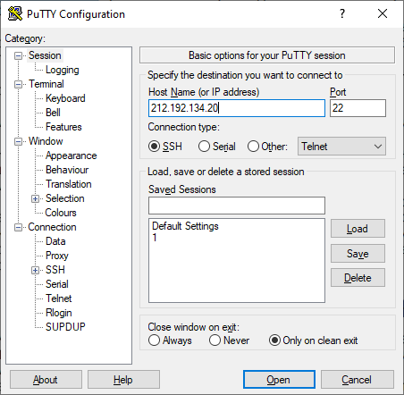Autorization в PuTTY
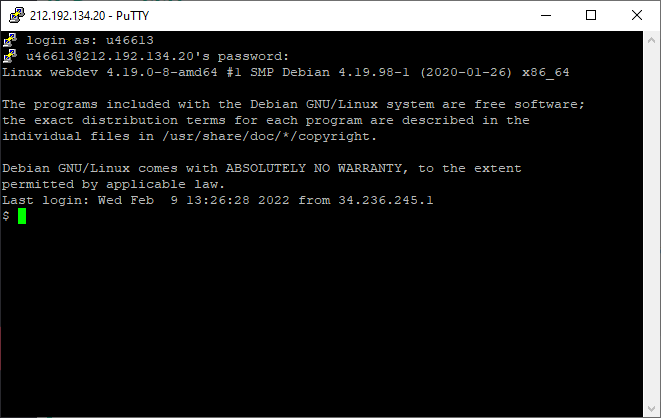Ping - время, необходимое для перемещения данных.
Ping до Kubsu.ru
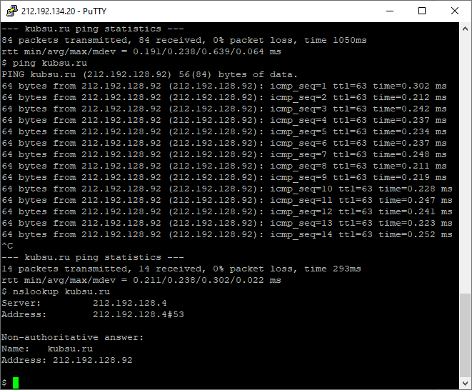Ping до kubsu-dev.ru
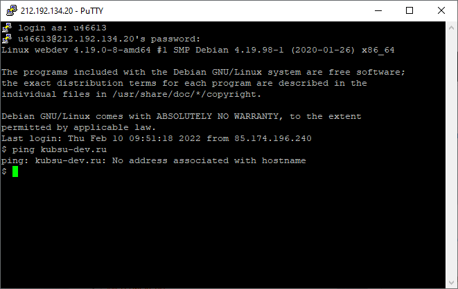nslookup — утилита, предоставляющая пользователю интерфейс командной строки для обращения к системе DNS.
Позволяет задавать различные типы запросов и опрашивать произвольно указываемые сервера.
A = адресная запись
MX = почтовый шлюз + приоритет
NS = адрес узла доменной зоны
nslookup-a kubsu.ru
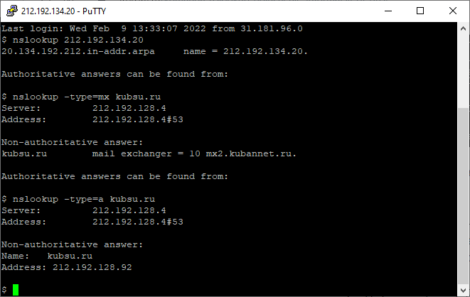nslookup-mx kubsu.ru
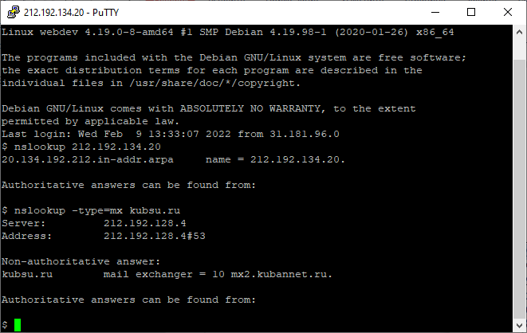nslookup-NS kubsu.ru
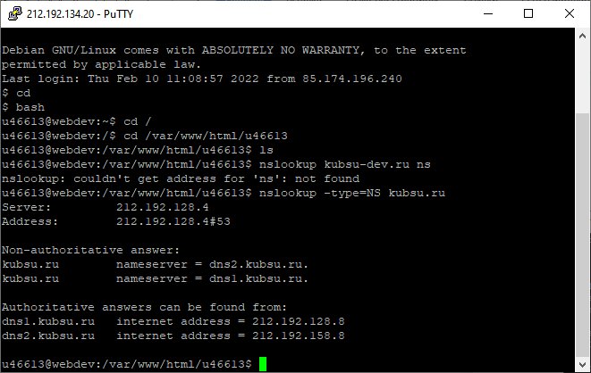nslookup-mx kubsu-dev.ru
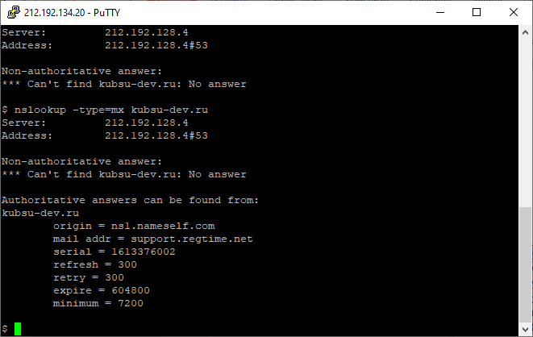nslookup-a kubsu-dev.ru
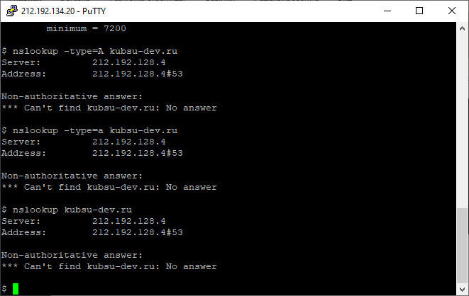nslookup-ns kubsu-dev.ru
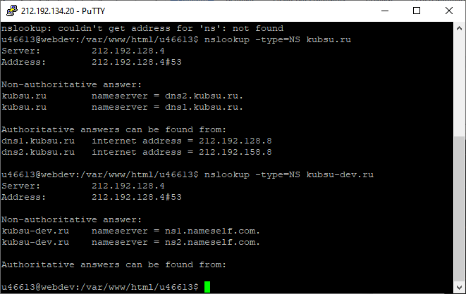WHOIS — сетевой протокол прикладного уровня, базирующийся на протоколе TCP (порт 43).
Основное применение — получение регистрационных данных о владельцах доменных имён, IP-адресов и автономных систем.
whois kubsu
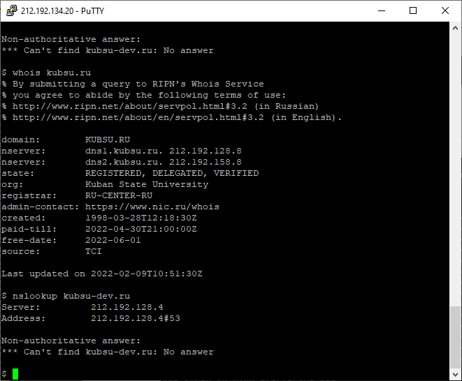whois kubsu-dev
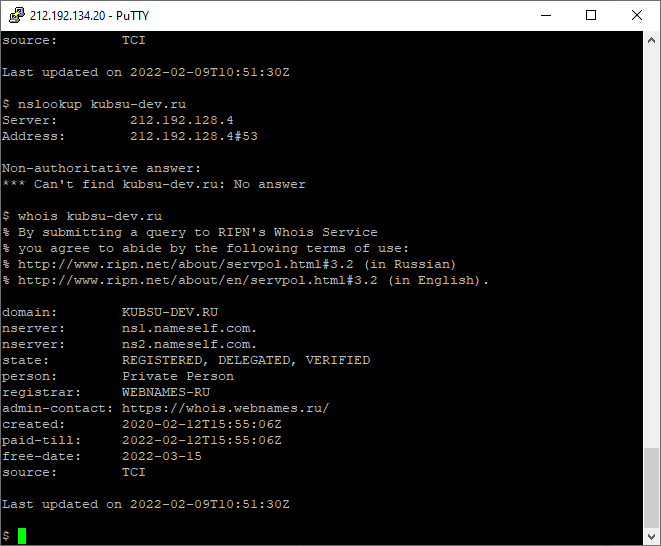